Pipe de production 1.5 - Edmond et Lucy (Unity)
Deux séries - Edmond et Lucy (Unity) et les Minus (Unreal) - un seul pipe de production
 Arrivée en cours de production sur la série Edmond et Lucy, j’ai développé pour l’équipe de production plusieurs outils avec pour objectif d’améliorer leur confort de travail et de réduire le temps passé sur les tâches rébarbatives.
Arrivée en cours de production sur la série Edmond et Lucy, j’ai développé pour l’équipe de production plusieurs outils avec pour objectif d’améliorer leur confort de travail et de réduire le temps passé sur les tâches rébarbatives.
La création du pipe de production
Architecture | Python | Shotgrid | Storyboard Pro
Plusieurs tâches chronophages ont été identifiées :
- La rédaction des breakdowns.
- La création des épisodes sur Shotgrid et leur mise à jour ultérieure.
- L’ajout des notes de retake au Shotgrid.
Cela mena à la création de deux outils python avec interface graphique.
Le premier, appelé BreakdownMachine, a réduit de 60% le temps de création d’un breakdown. De trois jours avant l’outil, le temps de rédaction est passé à un jour avec ce nouvel outil.
Grace au second outil, la création des épisodes sur Shotgrid et l’envoie des notes de retake ont été complètement automatisés.
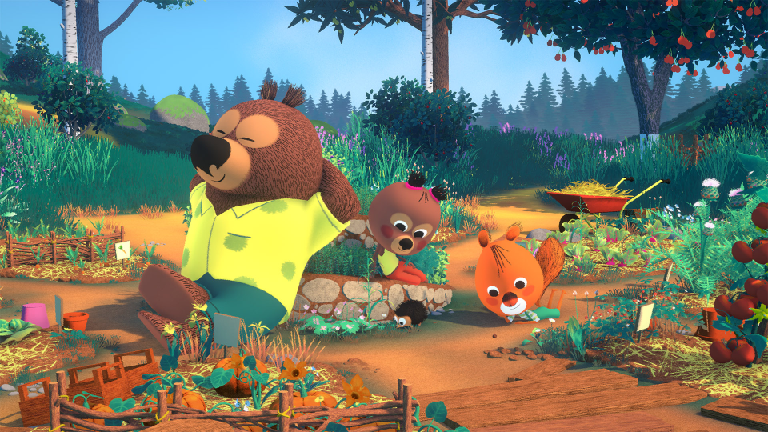
Etendre le pipe à d'autres départements
Python | Shotgrid | Traitement de médias
Deux autres outils transverses aux différentes équipes (production, artistiques mais aussi distribution) ont eu le droit à une première version lors de cette production :
- Une visionneuse de Shotgrid permettant de sortir au format pdf des listes d’assets filtrées. Ces PDFs peuvent ensuite être partagées aux équipes externes au studio.
- Une Média Machine qui permet des retouches courantes sur des vidéos et images, comme par exemple ajouter une watermark sur une vidéo, changer l’audio, passer une série d’images en vidéo...
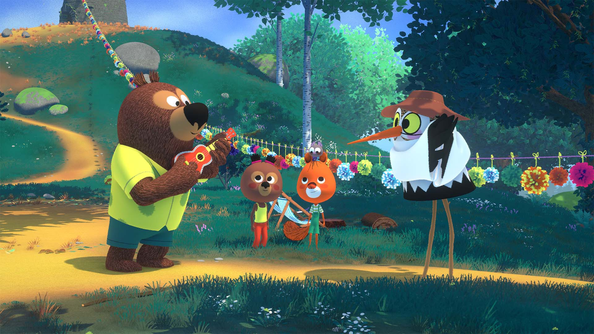
Le début d'une vision à long terme
Architecture | R&D | Dossiers de Financement
Dès la première saison de Edmond & Lucy, le pipe a été pensé et conçu pour le long terme. L’objectif était simple : même si le moteur de jeu change (Unity et Unreal), les outils hors moteur doivent rester utilisable : Miam n’a pas 2 pipes mais 1.5 pipes. Les outils créés pour Edmond et Lucy sont la première pierre de ce Pipe 1.5 tel que je le conçois.
En effet, l’architecture des outils de production a été pensée dès le début pour une bascule rapide en multi-production : chaque série utilise la même version de l’outil. Temps de développement et améliorations sont ainsi mutualisés. Dans cette architecture, les points de connexion aux logiciels tiers sont également isolés de façon à augmenter la résilience à un changement de logiciel annexe.
À titre d’exemple, le passage de Unity à Unreal entre Edmond et Lucy et Les Minus n’a pas affecté les outils de production. Un changement de manager d’assets ne demanderait la modification que d’une classe unique dans la BreakdownMachine.
Planifier dès le départ l’évolution du pipe et l’ajout progressif d’outils à celui-ci a également été un avantage lors de préparation de dossiers auprès du CNC et autres organismes.
BoardMachine
Les décors 3D au storyboard
La BoardMachine est l’outil phare du pipe Miam, et une réelle plus-value artistique.
Faire disparaitre les frictions entre Storyboard et Layout
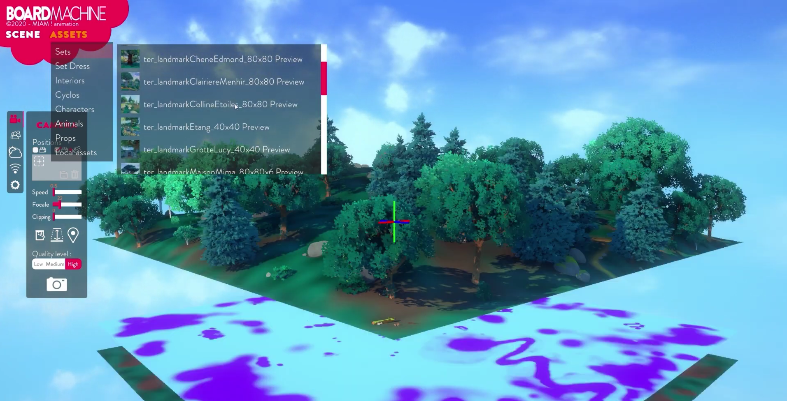
Il fallait donc donner aux storyboarders le moyen d’intégrer directement les décors 3D et les personnages de la série à leurs boards.
C’est dans ce but qu’a été développée la BoardMachine. Cet outil permet de créer des mises en scène avec les assets 3D de la série et de les exporter en .png pour les intégrer aux storyboards
Du prototype à une BoardMachine fonctionnelle
Unity | C# | Bundles | Asynchrone
Avant mon arrivée, un prototype avait déjà été réalisé mais il fallait le reprendre entièrement et des fonctionnalités restaient à ajouter.
En me basant sur ce prototype, j’ai développé sur Unity la BoardMachine utilisée en production.
La BoardMachine est un exécutable Unity. Autonome, il peut être utilisé aussi bien au studio que depuis chez les artistes (très pratique en période de confinement).
Les assets de la série sont chargées en asynchrone depuis un serveur et l’artiste peut les déplacer, masquer, et dupliquer à l’envie avant de sauvegarder sa mise en scène et de l’exporter sous forme d’une ou plusieurs images, selon ses besoins.
L’outil permet en effet de rendre séparément personnages et décors. Pour rendre au mieux les intentions de l’artiste, la BoardMachine permet aussi de modifier la météo, la saison et le moment de la journée.
Avec l’utilisation systématisée de la BoardMachine, les retakes liées aux problèmes d’échelle ont quasiment disparu. Des usages annexes ont aussi émergé.
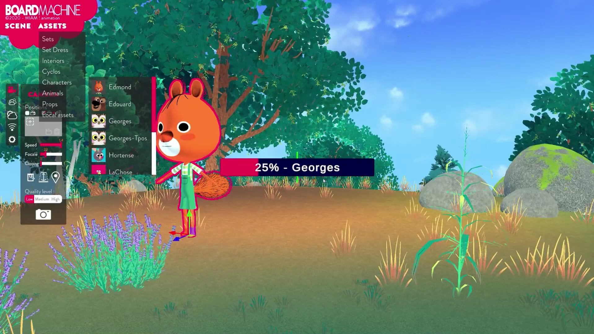

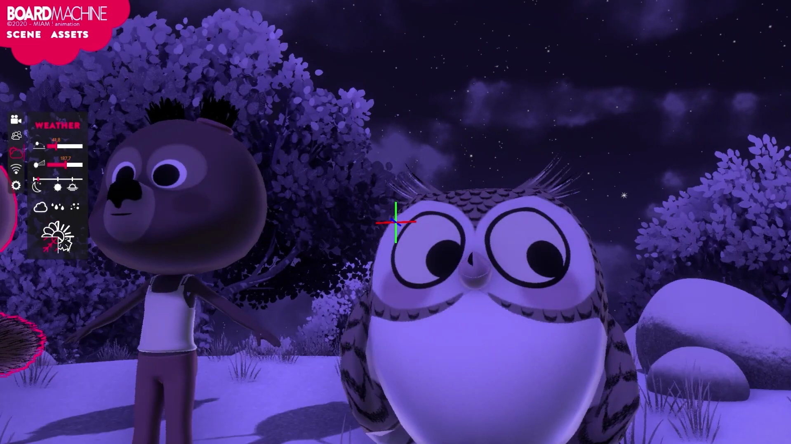
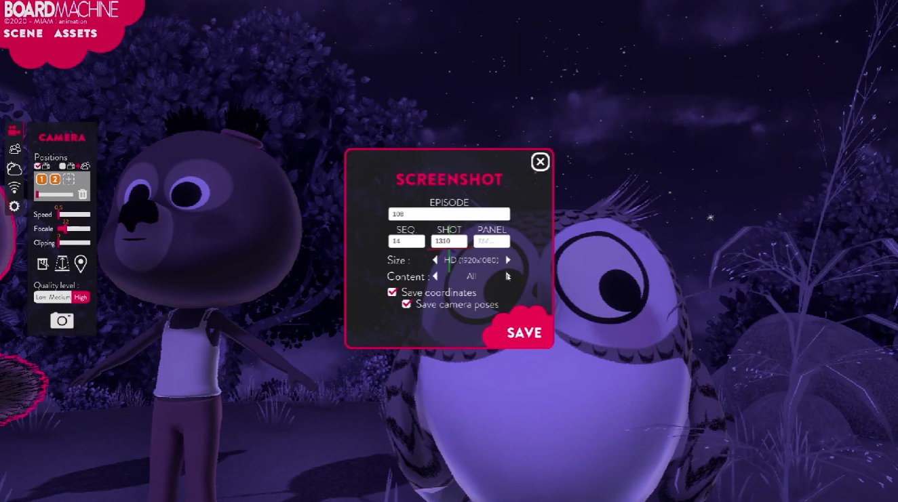
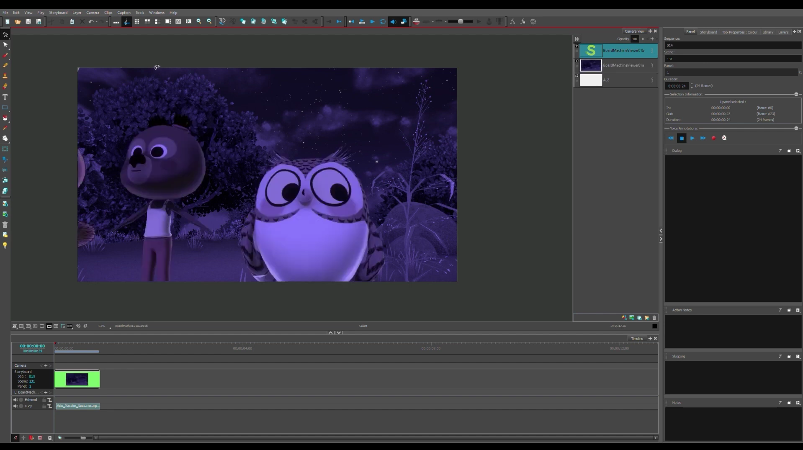
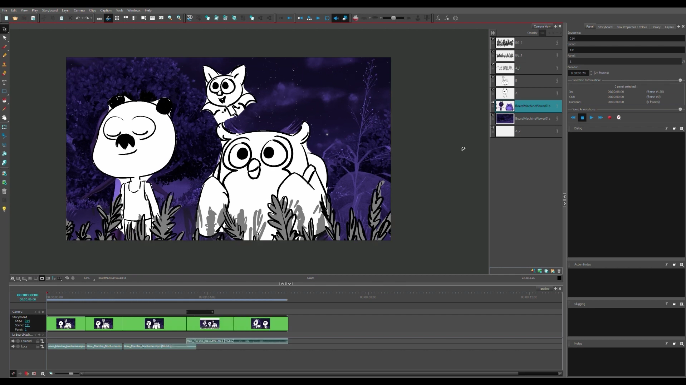
Le superviseur du storyboard utilisait les fichiers de sauvegarde fournis par son équipe pour effectuer lui-même certaines retouches.
Un point technique est à noter : les assets étant chargés depuis un serveur, de nouveaux assets et personnages peuvent être ajoutés à la BoardMachine sans que les artistes aient à charger une nouvelle version de l’outil.
Il était aussi possible de couper les accès à distance, une sécurité supplémentaire quand une partie des artistes travaille en distanciel.
De nouveaux usages au layout et à l'animation
Unity | Maya | Live-Link
L’ajout d’un live-link (connexion entre deux logiciels en temps réel) a permis aux animateurs travaillant sur Maya de voir directement dans la BoardMachine ce que donneront leurs mouvements de caméra dans Unity. L’utilisation des décors finaux au storyboard a permis aux chaînes de se faire une meilleure idée de l’aspect final qu’aurait l’épisode.
Dessiner dans un univers 3D
Unity | Dessin Vectoriel
Un module de dessin vectoriel, avec calques et toutes les fonctionnalités de base (couleur, gomme, trait variable, remplissage) a également été intégré et amélioré pour la BoardMachine.
La BoardMachine en fonctionnementUnreal – Les Minus
Du moteur de jeu au moteur temps réel
En prévision de la saison 1 des Minus (52x11’ diffusée sur Canal+), dès 2023 a commencé la création d’un pipe Unreal interne à Miam.
A cet époque, l’objectif était clair : avancer autant que possible la création du pipe Unreal avant l’arrivée des équipes artistiques des Minus.
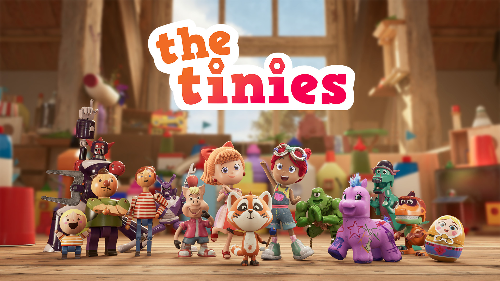
Préparer le Pipe à un changement d'échelle et de moteur
Pipe (planification & développement) | Unreal | Blueprints | Sequencers | Génération d'épisode | Perforce
A la fin de Edmond et Lucy, un post mortem de la série a été effectué par les équipes. De mon côté, j’ai fait un relevé exhaustif des outils ajoutés à Unity au cours de la production.
Ensemble, ces deux éléments ont donné une première liste des outils à Créer dans Unreal pour adapter le moteur de jeu aux besoins d’une série d’animation. Parmis cette première série d’outils intra-Unreal j’ai personnellement développé la génération du squelette des épisodes (création et imbrication des sequencers dans Unreal, import de l'animatic, ajout des assets, création des projets d'épisodes sur Perforce...) afin de façon à refléter le breakdown de l’épisode.
Pour faire face à des assets plus lourds que sur Edmond et Lucy et des équipes plus nombreuses, il a aussi fallu changer de gestionnaire de version (un gestionnaire de version permet d’enregistrer les évolutions successives d’un épisode) et basculer sur Perforce. J’ai participé à son installation puis assuré sa gestion et créé sa documentation.
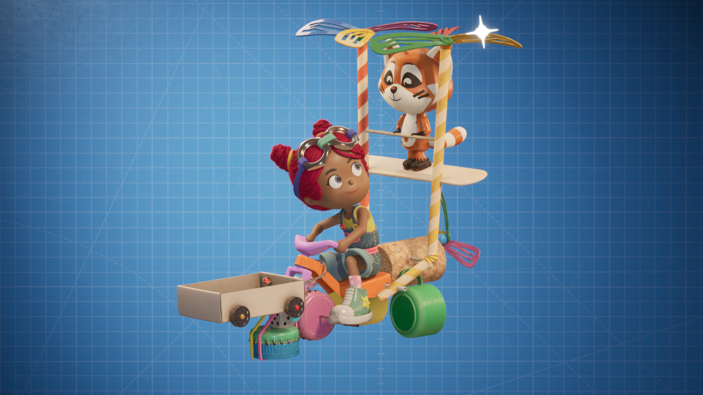
Dialoguer avec les artistes pour supprimer les points de friction
Unreal | Blueprints | Python (Unity) | Batch (Perforce) | Shotgrid | Google Sheet
Suite à l’arrivée des équipes, il y a eu les premiers échanges avec les superviseurs des différents départements artistiques. A leur demande une seconde vague d’outils Unreal a été crée, principalement pour le lighting, et ceux existant ont été améliorés.
La facilité d’utilisation des outils de lighting permettait d’appliquer une première passe de lighting en quelques minutes. Cela était fait près layout ce qui a amélioré le confort des équipes de Layout.
Une couche d’automatisation interne au studio a aussi été ajoutée sur le Perforce, permettant d’automatiser création, chargement et destruction des dépôts via batch.
Plusieurs modifications ont également été apportées au shotgrid de la série pour faciliter l’accès aux informations essentielles. Cela consistait en l’ajout de plusieurs queries (par exemple, affichage du caste complet d’un épisode, et non plus shot par shot) et de nouveaux statuts.
Pour les équipes de production, il y a aussi eu un travail sur l’automatisation de tableurs. Parce que parfois, la solution la plus basique est aussi la plus efficace et la plus adaptée !
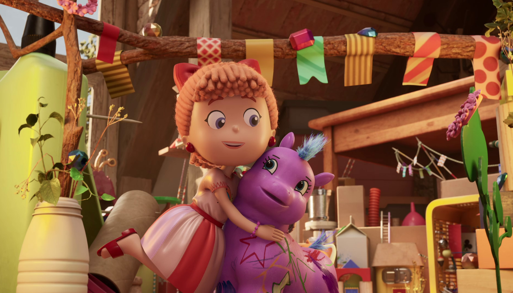
Gestion de projets : savoir où mettre la force de travail et quand
Gestion d'équipe | Gestion de plannings | Jira (Gestion & Automatisation)
Les Minus représentait une montée en puissance pour les équipes techniques de Miam : plus d’étapes artistiques faites en internes, donc plus d’outils à créer et améliorer ainsi que plus de support pour les artistes. Il a fallut agrandir l’équipe et lancé un processus de recrutement auquel j’ai participé (revue des CVs, entretiens, tests techniques…).
A chaque étape l’intégration d’Unreal au pipe Miam demandait d’avancer sur plusieurs outils en même temps, parfois dans un temps très limité ou pour une date spécifique. Les compétences demandées sont parfois spécifiques, et il ne faut pas oublier le temps de test et les retours potentiels des artistes. Le département R&D s’est aussi investit dans la formation technique des différentes équipes, via la rédaction de la traditionnelle documentation mais aussi via des cessions de formation aux outils Miam (et aux outils externes) pour les départements artistiques concernés.
Sur cette periode, aux Minus venaient s’ajouter d’autres projets liés à la vie du studio.
Dispatcher ces différents chantiers entre les membres du pôle R&D, suivre leur avancée, s’assurer que les dates butoirs et priorité sont respectées, intégrer au planning les retours et demandes des artistes faisait partie de mes tâches.
Afin de faciliter le suivit mais aussi pour rendre le planning transparent pour mon équipe, j’ai basculé les équipes de R&D sur un Jira que j’ai customisé et automatisé pour nos besoins.
Jeux Dérivés – Edmond et Les Minus
Etendres les IPs des séries
En parallèle des séries, plusieurs jeux plus ou moins complexes ont été développés et prototypés.
Les minis jeux Edmond
Unity | WebGL | Supervision
Pour accompagner la sortie de Edmond et Lucy trois jeux webGL ont été fournis aux chaînes (minis jeux jouables dans un navigateur), j’ai supervisé le développement de ces jeux.
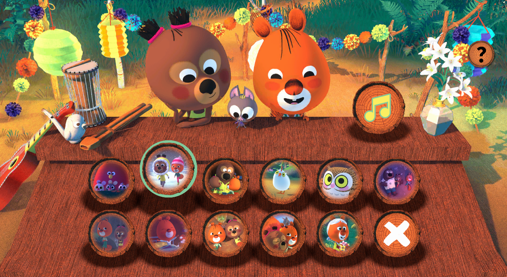
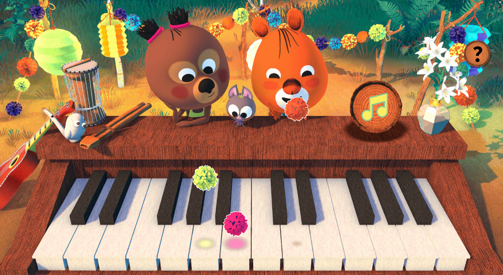
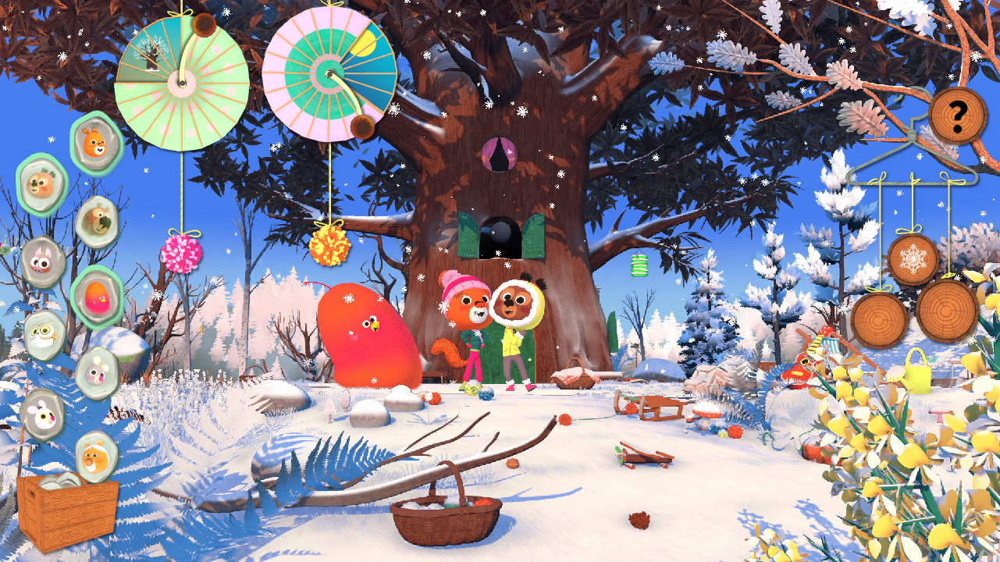
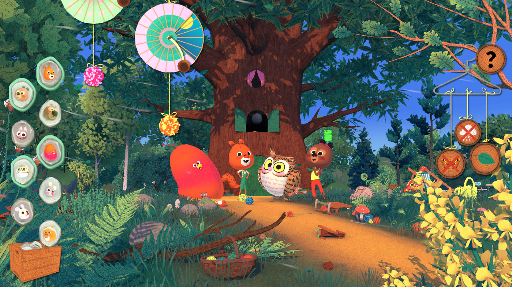
Le Voyage de la Chose
Unity | Optimisation (Code, Profiler...) | Gestionnaire de version
Sur le jeu Le Voyage de La Chose, Un plateforme dans l’univers d’Edmond et Lucy où le joueur incarne La Chose, ma première tâche a été l’optimisation du projet. Le poids de certaines scènes (ou niveau) a été divisé par 5 grâce à une bonne utilisation des prefabs, une détection des éléments les plus lourds en mémoire et leur remplacement par une alternative plus légère. C’était une étape indispensable pour pouvoir le mettre sous gestionnaire de version.
Après cela, il y a eu toute une phase de débogage, de rationalisation et d’optimisation du code.
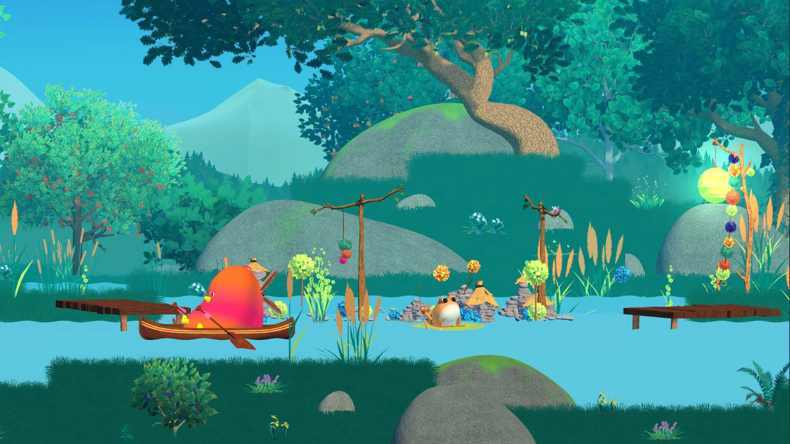

Le Jeu des Minus
Unity | Unreal | Dossier de financement | Plannification
Ce travail d’optimisation était aussi une part importante de l'étude de faisabilité d'un jeu Minus (annoncé en 2025 dans Picsou Magazine), jeu pour lequel plusieurs prototypes ont été réalisés. Pour ce jeu j’ai également assuré la rédaction de tous les documents techniques nécéssaires aux demandes de financements.